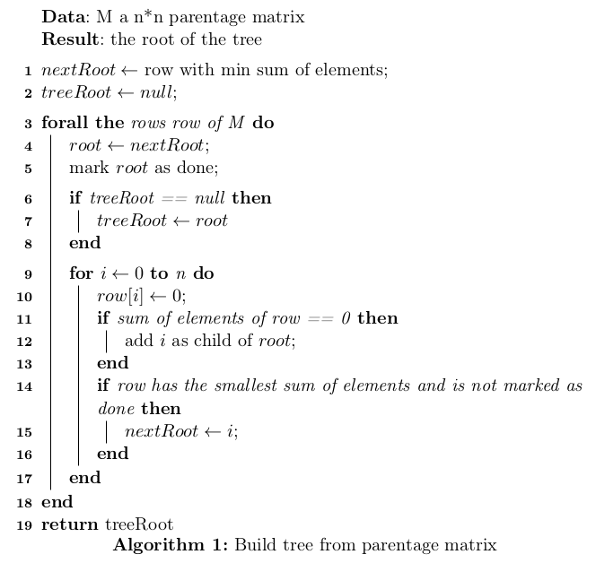
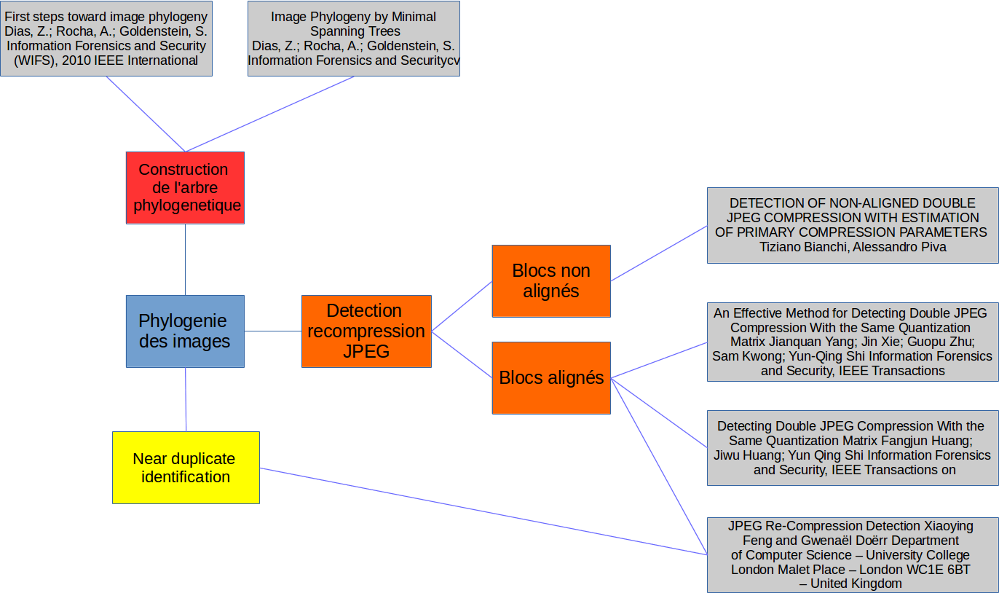

semaine3
La semaine dernière, j'avais eu un début d'idée sur une méthode pour calculer l'Image Phylogeny Tree (IPT), j'ai consacré cette semaine à investiguer cette méthode.
Cette idée consistait à ne pas chercher à estimer une distance entre deux images qui sont des Near-Duplicates comme peuvent le faire des approches telles que 1 ou 2, mais plutôt de savoir si une image pouvait être le parent d'une autre.
Une image est le Near-Duplicate d'une autre si 3 I1 = T(I), T ∈ τ où τ est un ensemble de transformations tolérées. Dans notre cas τ = {crop, compression}.
Je pense donc qu'il ne faut pas simplement savoir dire si une image est le Near-Duplicate d'une autre, mais surtout estimer dans quel sens s'est fait la transformation, cela permetrrait de déterminer si une image est le parent d'une autre.
Je pense que pour identifier si une image est le parent d'une autre image, il faut en fait tenter de prouver que cette image ne peut pas être le parent. S'il est impossible de prouver que cette image n'est pas le parent, on en déduira que l'image est effectivement un parent. Le but est maintenant de trouver les bons critères pour discriminer un parent d'un non parent.
On pourra notamment regarder la compression, c'est à dire que si l'image est plus compressée (que celle dont on essaie de dire si elle est le parent), elle ne peut pas être le parent. De même pour le crop, une image ne peut pas être le parent d'une autre si c'est une sous partie. Ce ne sont que des exemples de features, il en existe évidemment un grand nombre. Le but est donc de les identifier et de les utiliser.
On a ici réduit une problème de phylogenie à un problème d'identification de la présence de parentée entre deux images.
On va créer une matrice de parentée entre les différentes images, matrice qui pourra être utilisée pour reconstruire l'arbre à l'aide de l'algorithme suivant :

Je n'ai pas trouvé d'algorithme répondant à mon problème alors j'en ai écris un. Il part du principe que si une image n'a aucun parent, c'est que ça doit être la racine, et ce de manière récursive, le parent est enlevé de la matrice chaque fois qu'il est traité.
Il a une complexité de O(n2) à cause des deux boucles lignes 3 et 9, et si le calcul de la somme n'est pas refait à chaque fois mais maintenu à jour, toutes les autres opérations sont en O(1).
Il est déjà implémenté et il tourne.
Je n'ai pas réussi à trouver de papier traitant de la parentée entre deux images. Les articles sur la détection de recompression JPEG le font sur une seule image, ce qui serait du gachis dans notre cas, car nous disposons de tout un ensemble d'images, la problématique est différente, il ne s'agit pas de savoir si une image est doublement compressée, mais si une image est compressée à partir d'une autre. Néamnoins 4 propose une méthode pour identifier une double compression, mais aussi une triple, quadruple…

Figure 2: Premier jet du plan
Footnotes:
First steps toward image phylogeny Dias, Z.; Rocha, A.; Goldenstein, S. Information Forensics and Security (WIFS), 2010 IEEE International Workshop on Year: 2010
Image Phylogeny by Minimal Spanning Trees Dias, Z.; Rocha, A.; Goldenstein, S. Information Forensics and Security, IEEE Transactions on Year: 2012
A. Joly, O. Buisson, and C. Frélicot, “Content-based copy retrieval using distortion-based probabilistic similarity search,” IEEE Trans. Multimedia, vol. 9, no. 2, pp. 293–306, Feb. 2007.
Detecting Double JPEG Compression With the Same Quantization Matrix Fangjun Huang; Jiwu Huang; Yun Qing Shi Information Forensics and Security, IEEE Transactions on